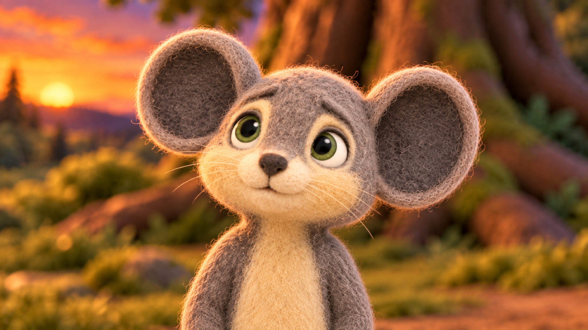

Current keyframe replacements and anchor calibration options. All are pending owner review. No owner approvals have been inferred. Click an image to inspect the full-resolution PNG.
For anchors, select an exact filename/hash within its family; alternatives are not interchangeable. Check canonical identity, anatomy, ground support, cast scale, landmarks and rope/net continuity. Scene 16 waits for approval of the root-corrected daytime master.
Upper-body close-ups — current revisions
Owner standard: head, full mane, shoulders and upper chest only, matching s15x_p03 r03. The same net covers the crown and shoulders, with a clear face opening. The two Scene 13 revisions preserve every pixel outside the face opening from s11 p04 r04; their net and background are identical. All new candidates remain pending owner review.
s11_p04 · r04
s11_p04_r04_candidate.png
s13_p02 · r06
s13_p02_r06_candidate.png
s13_p05 · r05
s13_p05_r05_candidate.png
Scene 11 — stable net across p01, p02 and p03
P01 is unchanged. P02 and P03 now keep its exact body, net and background outside the clear face-opening patch. Brows, eyelids and gaze carry the beats. Small net deformation is permitted only when a body movement physically requires it; rope topology and fixed ground contacts must remain stable. No video has been rendered or approved here.
The full Scene 13 contact sheet is stale because other active slots are missing. The three images above are the current revisions; missing owner-deleted images have not been restored.
Scene 15 — fixed body, expression-only portraits
P03 r03 is unchanged. P01 r04 and P05 r04 retain every pixel outside the clear face patch from p03, including chest, shoulders, mane, ears and background. Only facial expression differs. Pending owner review.
Current s05x p05 r03 (shortened Milo tail) uses the owner-selected p02 resting body as its guide: folded hind paws above the ground, continuous torso and readable support. Milo remains in the later trip. Strong sunset warmth and some coarse fibers remain; final material and scale review is pending. This local repair does not clear the existing plate/staging gate.
P01 is unchanged. P02 is a focused edit of that owner-preferred Leo, touching the same grounded trigger while the original net remains folded overhead. P03 keeps its original geometry and expression, with a mild color-only adjustment toward P01. New revisions remain pending final visual approval.
P01 — unchanged reference
s10_p01_r02_candidate.png
P02 r06 — paw position closer to P03
s10_p02_r06_candidate.png
P03 r03 — color matched
s10_p03_r03_candidate.png
Scene 09 foreground-root correction
The missing left root has been added to match the r02 master. Leo and every pixel outside the two foreground repair areas are unchanged. This preserves the existing shot; pending setup/visual approval remains recorded.
Calibration poses establish size; they are not replacements for the planned action shots. The trap wide option also needs anatomical and same-depth cast-size review.
The approved Milo portrait anchor fills most of the frame with face and upper torso. The current registered camera target instead describes a full standing-equivalent height of about 56% of frame. Confirm how these should be reconciled before adopting new portrait geometry.
Approved size/framing reference

Exact registered delivery background (blur sigma 10); scenery must not be invented
 s11_p04_r04_candidate.png
s11_p04_r04_candidate.png s13_p02_r06_candidate.png
s13_p02_r06_candidate.png s13_p05_r05_candidate.png
s13_p05_r05_candidate.png s11_p01_r02_candidate.png
s11_p01_r02_candidate.png s11_p02_r02_candidate.png
s11_p02_r02_candidate.png s11_p03_r02_candidate.png
s11_p03_r02_candidate.png